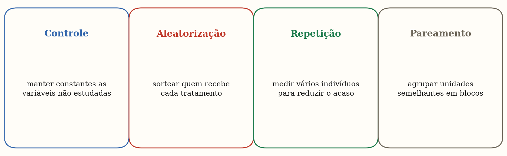
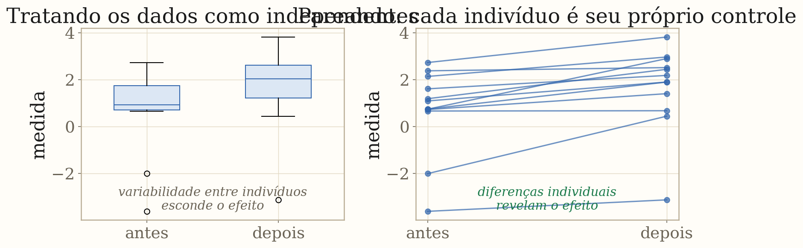
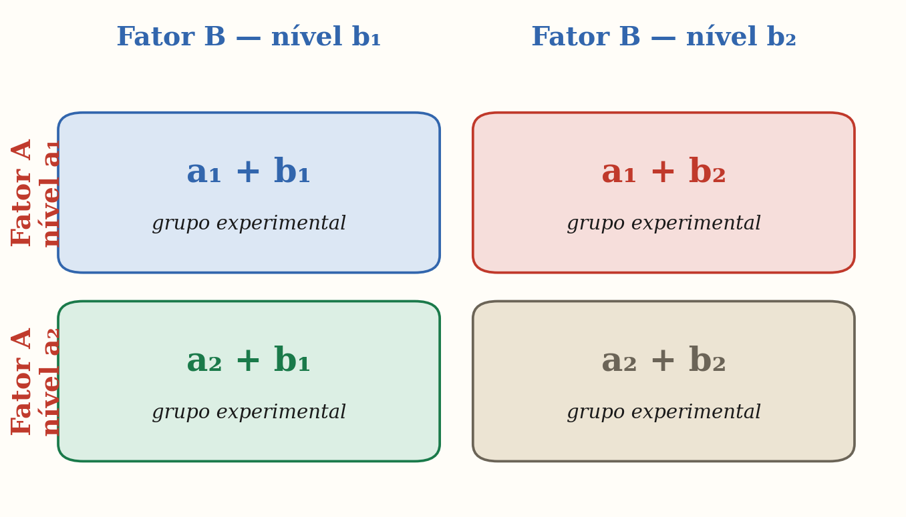
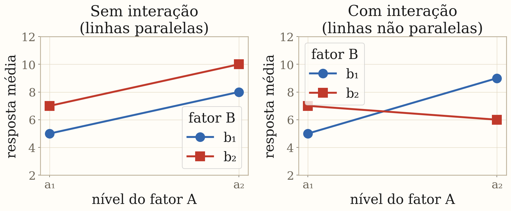
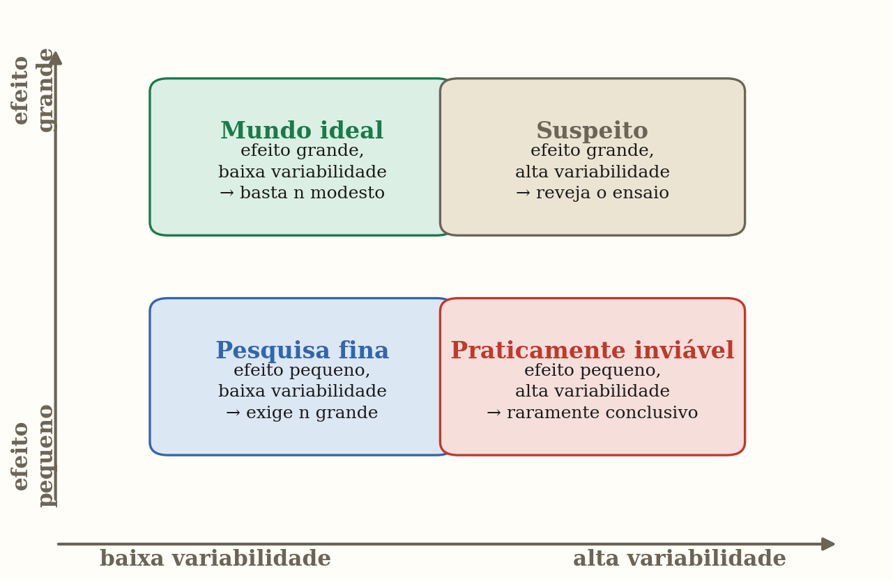
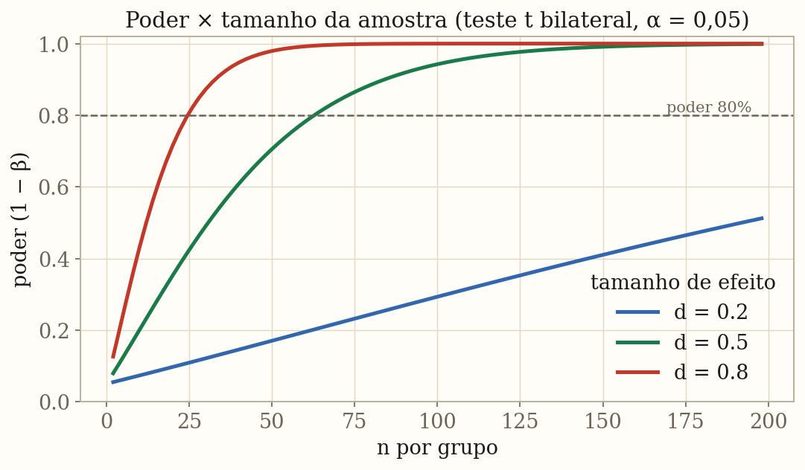
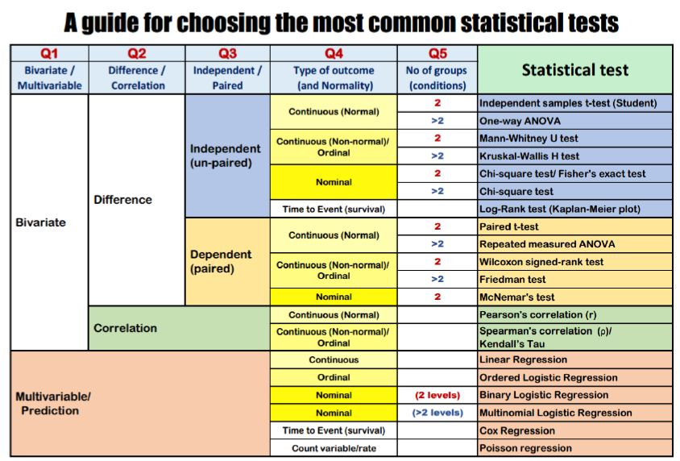

Planejamento Experimental
Instituto de Biofísica Carlos Chagas Filho · UFRJPedro Torres · Gilberto Weissmuller
Nenhuma análise conserta um experimento mal desenhado
- O resultado de um estudo depende fundamentalmente de como os dados foram coletados
- Uma análise sofisticada não recupera informação que jamais foi registrada
- Planejar bem = definir antes da coleta: o que medir, quantos indivíduos, como alocar os tratamentos e quais vieses controlar
- Cálculo amostral e controle de confundidores têm que vir antes do primeiro tubo
- Estudos subdimensionados geram "negativos" que nada provam e "positivos" que superestimam o efeito
Os quatro pilares de um bom experimento

Controle · Aleatorização · Repetição · Pareamento — os pilares do desenho experimental clássico
Controle: isolar o que se quer estudar
- Manter constantes todas as variáveis que não estão sendo manipuladas
- Grupo controle recebe placebo ou condição padrão nas mesmas condições do grupo experimental
- Mesmo observador, mesmo equipamento, mesmo momento do dia — quando possível
- Variações não controladas inflam a variabilidade e reduzem o poder
- Se um grupo é medido de manhã e o outro à tarde, a diferença pode ser ritmo circadiano, não o tratamento
Aleatorização: o único antídoto para o confundidor
- Sortear quem recebe cada tratamento distribui aleatoriamente os confundidores não conhecidos
- Sem aleatorização, grupos podem diferir em fatores que o pesquisador não mediu
- Se pacientes mais graves tendem a receber tratamento A, qualquer diferença pode ser gravidade
- Aleatorização em blocos: garante equilíbrio por subgrupos (sexo, centro, turno)
- Duplo-cego: participante e avaliador desconhecem o grupo — controla viés de expectativa
Repetição: o acaso se dilui com o n
- Qualquer medida individual carrega variabilidade; a média de $n$ medidas tem desvio reduzido por $\sqrt{n}$
- Repetição técnica: mesma amostra medida mais de uma vez (controla erro de medida)
- Repetição biológica: amostras de indivíduos diferentes (controla variabilidade biológica)
- Os dois tipos não são intercambiáveis: três medidas do mesmo camundongo ≠ três camundongos
- O $n$ do cálculo amostral sempre se refere a unidades experimentais independentes
Pareamento: cada indivíduo como seu próprio controle

Sem pareamento, a variabilidade entre indivíduos domina o sinal. Pareando, cada diferença individual é removida.
Planejamento fatorial: vários fatores ao mesmo tempo
- Em vez de variar um fator de cada vez, varia-se todos simultaneamente
- Notação 2×2: dois fatores, dois níveis cada → 4 grupos
- Generaliza para 2×3, 3×3, 2×2×2, …
- Vantagens:
- mais eficiente: o mesmo $n$ responde a várias perguntas
- revela interações entre fatores
- Analisado por ANOVA fatorial (two-way, three-way)

Efeitos principais e interação

Linhas paralelas → sem interação · Linhas não paralelas → o efeito de um fator depende do nível do outro
Tipos de estudo e
variáveis de confusão
Quando podemos afirmar causalidade?
Experimento verdadeiro vs. estudo observacional
| Característica | Experimento controlado | Estudo observacional |
|---|---|---|
| Variável manipulada? | Sim, pelo pesquisador | Não — apenas observada |
| Aleatorização? | Sim (RCT) | Não |
| Permite causalidade? | Sim | Não — apenas associação |
| Controla confundidores? | Por aleatorização | Parcialmente (propensity score, etc.) |
| Exemplos | Ensaio clínico, RCBD | Coorte, caso-controle, transversal |
Variável de confusão: o culpado escondido
- Um confundidor está associado tanto à exposição quanto ao desfecho — e não é intermediário
- Sem controle, seu efeito se mistura ao do tratamento e distorce a estimativa
- Motoristas de ônibus tinham mais doença coronariana do que cobradores
- A diferença real era sedentarismo; estratificando por atividade, o efeito do exercício emergiu
- Aleatorização distribui confundidores conhecidos E desconhecidos — a vantagem do experimento
Poder estatístico e
cálculo amostral
Quantos sujeitos preciso para responder minha pergunta?
Os dois tipos de erro e o que os controla
| H₀ é verdadeira | H₀ é falsa | |
|---|---|---|
| Não rejeitamos H₀ | Decisão correta (1 − α) | Erro tipo II (β) — falso negativo |
| Rejeitamos H₀ | Erro tipo I (α) — falso positivo | Decisão correta (poder = 1 − β) |
| O que controla? | Nível de significância α | n, efeito real, σ, α |
| Consequência | Alarme falso | Perde efeito real — estudo inconclusivo |
Poder: a chance de detectar o que existe
- Poder $= 1 - \beta = P(\text{rejeitar } H_0 \mid H_1 \text{ é verdadeira})$
- Convenção: queremos poder ≥ 80% (β ≤ 20%)
- Quatro fatores controlam o poder — fixados três, o quarto está determinado:
- ↑ $n$ → ↑ poder (mais informação = menos incerteza)
- ↑ $\delta$ (efeito real) → ↑ poder (sinal maior é mais fácil de ver)
- ↑ $\sigma$ (variabilidade) → ↓ poder (ruído esconde o sinal)
- ↑ $\alpha$ → ↑ poder, mas ↑ erro tipo I (tradeoff)
Os quatro quadrantes: efeito × variabilidade

A combinação de tamanho de efeito e variabilidade determina o esforço amostral necessário
Quantos sujeitos preciso?
- A pergunta central do planejamento: quantos indivíduos para 80% de poder, α = 0,05?
- Para comparação de duas médias (teste t, Welch):
- $d = \delta/\sigma$ é o tamanho de efeito padronizado (Cohen's d)
- $z_{0{,}975} \approx 1{,}96$ e $z_{0{,}80} \approx 0{,}84$ para poder = 80%
- Exemplo: $d = 0{,}5$ (efeito médio) → $n \approx 64$ por grupo
- Exemplo: $d = 0{,}2$ (efeito pequeno) → $n \approx 394$ por grupo
- Dobrar a precisão exige quatro vezes mais sujeitos
Poder em função do n: curvas para diferentes efeitos

Efeito grande (d = 0,8): poucos sujeitos bastam. Efeito pequeno (d = 0,2): centenas. A linha tracejada marca poder = 80%.
Significância, relevância
e tamanho de efeito
Um p-valor pequeno não significa que o efeito importa
Significativo não é o mesmo que importante
- Significância estatística: a diferença é grande o bastante para ser detectada pelo design
- Relevância clínica/biológica: a diferença é grande o bastante para importar na prática
- Com $n$ enorme qualquer diferença minúscula pode ser estatisticamente significativa
- 0,1 ponto de QI entre primogênitos e caçulas — $p < 0{,}001$ em 250 000 pares, mas clinicamente irrelevante
- O que importa: o tamanho do efeito e seu intervalo de confiança
- Reporte sempre: valor-p + tamanho de efeito + IC 95%
Medidas de tamanho de efeito padronizadas
| Medida | Quando usar | Pequeno | Médio | Grande |
|---|---|---|---|---|
| Cohen's d | Diferença de duas médias (teste t) | 0,2 | 0,5 | 0,8 |
| Cohen's f | ANOVA (variação entre grupos) | 0,10 | 0,25 | 0,40 |
| Cohen's w | Qui-quadrado (tabelas de contingência) | 0,10 | 0,30 | 0,50 |
| r de Pearson | Correlação linear | 0,10 | 0,30 | 0,50 |
| η² (eta²) | Variância explicada pela ANOVA | 0,01 | 0,06 | 0,14 |
Cinco perguntas que decidem o teste estatístico
Bivariada ou multivariável?
uma única exposição contra o desfecho, ou ajuste para várias covariáveis?
Diferença ou correlação?
comparar grupos / medir um efeito, ou medir a associação entre variáveis?
Independente ou pareada?
amostras separadas, ou o mesmo indivíduo (antes–depois, blocos)?
Tipo do desfecho — e normalidade?
contínua (Normal ou não), ordinal, nominal, tempo até evento, contagem?
Quantos grupos ou condições?
duas, ou três ou mais?
Guia completo de escolha do teste estatístico

A guide for choosing the most common statistical tests
Pós-testes e o que sempre reportar
- Uma ANOVA significativa diz que alguma média difere — mas não qual
- Tukey HSD: todos os grupos comparados entre si
- Dunnett: cada grupo comparado com um único controle
- Bonferroni · Šidák: poucas comparações planejadas a priori
- Scheffé: combinações lineares de médias (contrastes)
- Não-paramétricos: Dunn (após Kruskal–Wallis) · Wilcoxon pareado corrigido (após Friedman)
- Antes de qualquer teste: faça um gráfico (histograma, boxplot, dispersão) e cheque suposições
- Sempre reporte valor-p + tamanho de efeito + intervalo de confiança
Checklist do bom experimento
- Pergunta de pesquisa clara e hipótese pré-registrada antes da coleta
- Cálculo amostral feito com tamanho de efeito mínimo relevante
- Aleatorização documentada (como foi feita, por quem, quando)
- Grupos equilibrados em covariáveis importantes (baseline table)
- Cegamento do avaliador quando possível
- Análise dos dados cega ou pré-especificada no protocolo
- Reporte: valor-p, tamanho de efeito (+ IC 95%) e poder pós-hoc se negativo
- Um estudo negativo bem dimensionado diz tanto quanto um positivo
Referências e material complementar
Material teórico completo e interativo:
monteirotorres.github.io/biostat
Notebooks em Python (pandas · seaborn · scipy.stats · statsmodels)
monteirotorres@biof.ufrj.br
Pratique com o notebook interativo:
Abrir no Google Colab Pós-testes, ANOVA fatorial, Kruskal-Wallis e curvas de poder com código Python